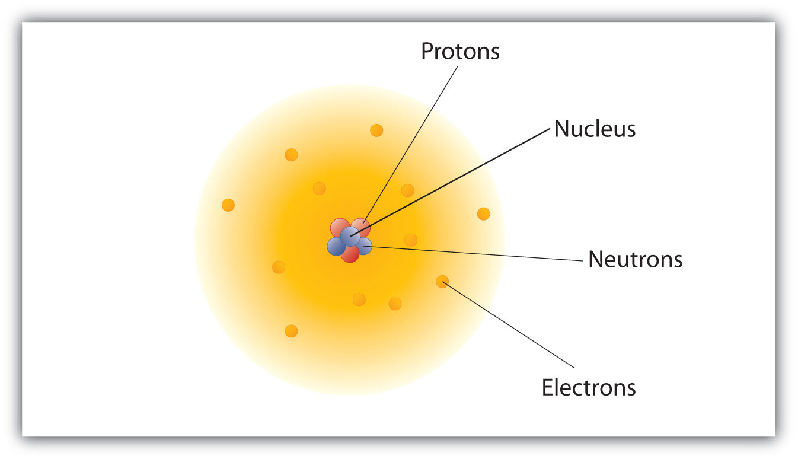
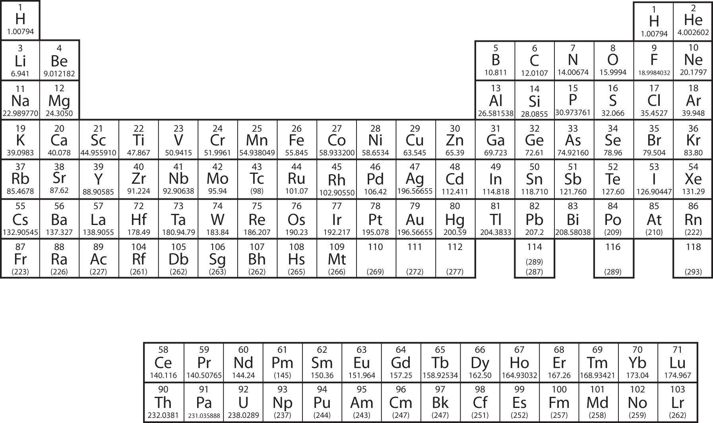
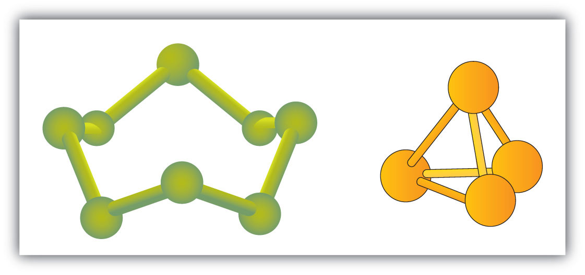

Although not an SI unit, the angstrom (Å) is a useful unit of length. It is one ten-billionth of a meter, or 10−10 m. Why is it a useful unit? The ultimate particles that compose all matter are about 10−10 m in size, or about 1 Å. This makes the angstrom a natural—though not approved—unit for describing these particles.
The angstrom unit is named after Anders Jonas Ångström, a nineteenth-century Swedish physicist. Ångström’s research dealt with light being emitted by glowing objects, including the sun. Ångström studied the brightness of the different colors of light that the sun emitted and was able to deduce that the sun is composed of the same kinds of matter that are present on the earth. By extension, we now know that all matter throughout the universe is similar to the matter that exists on our own planet.

Anders Jonas Ångstrom, a Swedish physicist, studied the light coming from the sun. His contributions to science were sufficient to have a tiny unit of length named after him, the angstrom, which is one ten-billionth of a meter.
Source: Photo of the sun courtesy of NASA’s Solar Dynamics Observatory, http://commons.wikimedia.org/wiki/File:The_Sun_by_the_Atmospheric_Imaging_Assembly_of_NASA%27s_Solar_Dynamics_Observatory_-_20100801.jpg.
The basic building block of all matter is the atom. Curiously, the idea of atoms was first proposed in the fifth century BCE, when the Greek philosophers Leucippus and Democritus proposed their existence in a surprisingly modern fashion. However, their ideas never took hold among their contemporaries, and it wasn’t until the early 1800s that evidence amassed to make scientists reconsider the idea. Today, the concept of the atom is central to the study of matter.
The smallest piece of an element that maintains the identity of that element is called an atomThe smallest piece of an element that maintains the identity of that element.. Individual atoms are extremely small. It would take about fifty million atoms in a row to make a line that is 1 cm long. The period at the end of a printed sentence has several million atoms in it. Atoms are so small that it is difficult to believe that all matter is made from atoms—but it is.
The concept that atoms play a fundamental role in chemistry is formalized by the modern atomic theoryThe concept that atoms play a fundamental role in chemistry., first stated by John Dalton, an English scientist, in 1808. It consists of three parts:
These concepts form the basis of chemistry.
Although the word atom comes from a Greek word that means “indivisible,” we understand now that atoms themselves are composed of smaller parts called subatomic particles. The first part to be discovered was the electronA tiny subatomic particle with a negative charge., a tiny subatomic particle with a negative charge. It is often represented as e−, with the right superscript showing the negative charge. Later, two larger particles were discovered. The protonA subatomic particle with a positive charge. is a more massive (but still tiny) subatomic particle with a positive charge, represented as p+. The neutronA subatomic particle with no charge. is a subatomic particle with about the same mass as a proton but no charge. It is represented as either n or n0. We now know that all atoms of all elements are composed of electrons, protons, and (with one exception) neutrons. Table 3.1 "Properties of the Three Subatomic Particles" summarizes the properties of these three subatomic particles.
Table 3.1 Properties of the Three Subatomic Particles
| Name | Symbol | Mass (approx.; kg) | Charge |
|---|---|---|---|
| Proton | p+ | 1.6 × 10−27 | 1+ |
| Neutron | n, n0 | 1.6 × 10−27 | none |
| Electron | e− | 9.1 × 10−31 | 1− |
How are these particles arranged in atoms? They are not arranged at random. Experiments by Ernest Rutherford in England in the 1910s pointed to a nuclear modelThe model of an atom that has the protons and neutrons in a central nucleus with the electrons in orbit about the nucleus. of the atom. The relatively massive protons and neutrons are collected in the center of an atom, in a region called the nucleusThe center of an atom that contains protons and neutrons. of the atom (plural nuclei). The electrons are outside the nucleus and spend their time orbiting in space about the nucleus. (See Figure 3.1 "The Structure of the Atom".)
Figure 3.1 The Structure of the Atom
Atoms have protons and neutrons in the center, making the nucleus, while the electrons orbit the nucleus.
The modern atomic theory states that atoms of one element are the same, while atoms of different elements are different. What makes atoms of different elements different? The fundamental characteristic that all atoms of the same element share is the number of protons. All atoms of hydrogen have one and only one proton in the nucleus; all atoms of iron have 26 protons in the nucleus. This number of protons is so important to the identity of an atom that it is called the atomic numberThe number of protons in an atom. of the element. Thus, hydrogen has an atomic number of 1, while iron has an atomic number of 26. Each element has its own characteristic atomic number.
Atoms of the same element can have different numbers of neutrons, however. Atoms of the same element (i.e., atoms with the same number of protons) with different numbers of neutrons are called isotopesAtoms of the same element that have different numbers of neutrons.. Most naturally occurring elements exist as isotopes. For example, most hydrogen atoms have a single proton in their nucleus. However, a small number (about one in a million) of hydrogen atoms have a proton and a neutron in their nuclei. This particular isotope of hydrogen is called deuterium. A very rare form of hydrogen has one proton and two neutrons in the nucleus; this isotope of hydrogen is called tritium. The sum of the number of protons and neutrons in the nucleus is called the mass numberThe sum of the number of protons and neutrons in a nucleus. of the isotope.
Neutral atoms have the same number of electrons as they have protons, so their overall charge is zero. However, as we shall see later, this will not always be the case.
Solution
Test Yourself
The number of protons in the nucleus of a tin atom is 50, while the number of neutrons in the nucleus is 68. What are the atomic number and the mass number of this isotope?
Answer
Atomic number = 50, mass number = 118
When referring to an atom, we simply use the element’s name: the term sodium refers to the element as well as an atom of sodium. But it can be unwieldy to use the name of elements all the time. Instead, chemistry defines a symbol for each element. The atomic symbolA one- or two-letter representation of the name of an element. is a one- or two-letter abbreviation of the name of the element. By convention, the first letter of an element’s symbol is always capitalized, while the second letter (if present) is lowercase. Thus, the symbol for hydrogen is H, the symbol for sodium is Na, and the symbol for nickel is Ni. Most symbols come from the English name of the element, although some symbols come from an element’s Latin name. (The symbol for sodium, Na, comes from its Latin name, natrium.) Table 3.2 "Names and Symbols of Common Elements" lists some common elements and their symbols. You should memorize the symbols in Table 3.2 "Names and Symbols of Common Elements", as this is how we will be representing elements throughout chemistry.
Table 3.2 Names and Symbols of Common Elements
| Element Name | Symbol | Element Name | Symbol | |
|---|---|---|---|---|
| Aluminum | Al | Mercury | Hg | |
| Argon | Ar | Molybdenum | Mo | |
| Arsenic | As | Neon | Ne | |
| Barium | Ba | Nickel | Ni | |
| Beryllium | Be | Nitrogen | N | |
| Bismuth | Bi | Oxygen | O | |
| Boron | B | Palladium | Pd | |
| Bromine | Br | Phosphorus | P | |
| Calcium | Ca | Platinum | Pt | |
| Carbon | C | Potassium | K | |
| Chlorine | Cl | Radium | Ra | |
| Chromium | Cr | Radon | Rn | |
| Cobalt | Co | Rubidium | Rb | |
| Copper | Cu | Scandium | Sc | |
| Fluorine | F | Selenium | Se | |
| Gallium | Ga | Silicon | Si | |
| Germanium | Ge | Silver | Ag | |
| Gold | Au | Sodium | Na | |
| Helium | He | Strontium | Sr | |
| Hydrogen | H | Sulfur | S | |
| Iodine | I | Tantalum | Ta | |
| Iridium | Ir | Tin | Sn | |
| Iron | Fe | Titanium | Ti | |
| Krypton | Kr | Tungsten | W | |
| Lead | Pb | Uranium | U | |
| Lithium | Li | Xenon | Xe | |
| Magnesium | Mg | Zinc | Zn | |
| Manganese | Mn | Zirconium | Zr |
The elements are grouped together in a special chart called the periodic tableA chart of all the elements.. A simple periodic table is shown in Figure 3.2 "A Simple Periodic Table", while a more extensive one is presented in Chapter 17 "Appendix: Periodic Table of the Elements". The elements on the periodic table are listed in order of ascending atomic number. The periodic table has a special shape that will become important to us when we consider the organization of electrons in atoms (see Chapter 8 "Electronic Structure"). One immediate use of the periodic table helps us identify metals and nonmetals. Nonmetals are in the upper right corner of the periodic table, on one side of the heavy line splitting the right-hand part of the chart. All other elements are metals.
Figure 3.2 A Simple Periodic Table
There is an easy way to represent isotopes using the atomic symbols. We use the construction
where X is the symbol of the element, A is the mass number, and Z is the atomic number. Thus, for the isotope of carbon that has 6 protons and 6 neutrons, the symbol is
where C is the symbol for the element, 6 represents the atomic number, and 12 represents the mass number.
Solution
Test Yourself
How many protons are in ?
Answer
11 protons
It is also common to state the mass number after the name of an element to indicate a particular isotope. Carbon-12 represents an isotope of carbon with 6 protons and 6 neutrons, while uranium-238 is an isotope of uranium that has 146 neutrons.
List the three statements that make up the modern atomic theory.
Explain how atoms are composed.
Which is larger, a proton or an electron?
Which is larger, a neutron or an electron?
What are the charges for each of the three subatomic particles?
Where is most of the mass of an atom located?
Sketch a diagram of a boron atom, which has five protons and six neutrons in its nucleus.
Sketch a diagram of a helium atom, which has two protons and two neutrons in its nucleus.
Define atomic number. What is the atomic number for a boron atom?
What is the atomic number of helium?
Define isotope and give an example.
What is the difference between deuterium and tritium?
Which pair represents isotopes?
Which pair represents isotopes?
Give complete symbols of each atom, including the atomic number and the mass number.
Give complete symbols of each atom, including the atomic number and the mass number.
Americium-241 is an isotope used in smoke detectors. What is the complete symbol for this isotope?
Carbon-14 is an isotope used to perform radioactive dating tests on previously living material. What is the complete symbol for this isotope?
Give atomic symbols for each element.
Give atomic symbols for each element.
Give the name of the element.
Give the name of the element.
All matter is composed of atoms; atoms of the same element are the same, and atoms of different elements are different; atoms combine in whole-number ratios to form compounds.
A proton is larger than an electron.
proton: 1+; electron: 1−; neutron: 0
The atomic number is the number of protons in a nucleus. Boron has an atomic number of five.
Isotopes are atoms of the same element but with different numbers of neutrons. and are examples.
There are many substances that exist as two or more atoms connected together so strongly that they behave as a single particle. These multiatom combinations are called moleculesThe smallest part of a substance that has the physical and chemical properties of that substance.. A molecule is the smallest part of a substance that has the physical and chemical properties of that substance. In some respects, a molecule is similar to an atom. A molecule, however, is composed of more than one atom.
Some elements exist naturally as molecules. For example, hydrogen and oxygen exist as two-atom molecules. Other elements also exist naturally as diatomic moleculesA molecule with only two atoms. (see Table 3.3 "Elements That Exist as Diatomic Molecules"). As with any molecule, these elements are labeled with a molecular formulaA formal listing of what and how many atoms are in a molecule., a formal listing of what and how many atoms are in a molecule. (Sometimes only the word formula is used, and its meaning is inferred from the context.) For example, the molecular formula for elemental hydrogen is H2, with H being the symbol for hydrogen and the subscript 2 implying that there are two atoms of this element in the molecule. Other diatomic elements have similar formulas: O2, N2, and so forth. Other elements exist as molecules—for example, sulfur normally exists as an eight-atom molecule, S8, while phosphorus exists as a four-atom molecule, P4 (see Figure 3.3 "Molecular Art of S"). Otherwise, we will assume that elements exist as individual atoms, rather than molecules. It is assumed that there is only one atom in a formula if there is no numerical subscript on the right side of an element’s symbol.
Table 3.3 Elements That Exist as Diatomic Molecules
| Hydrogen |
| Oxygen |
| Nitrogen |
| Fluorine |
| Chlorine |
| Bromine |
| Iodine |
Figure 3.3 Molecular Art of S8 and P4 Molecules
If each green ball represents a sulfur atom, then the diagram on the left represents an S8 molecule. The molecule on the right shows that one form of elemental phosphorus exists, as a four-atom molecule.
Figure 3.3 "Molecular Art of S" shows two examples of how we will be representing molecules in this text. An atom is represented by a small ball or sphere, which generally indicates where the nucleus is in the molecule. A cylindrical line connecting the balls represents the connection between the atoms that make this collection of atoms a molecule. This connection is called a chemical bondThe connection between two atoms in a molecule.. In Chapter 9 "Chemical Bonds", we will explore the origin of chemical bonds. You will see other examples of this “ball and cylinder” representation of molecules throughout this book.
Many compounds exist as molecules. In particular, when nonmetals connect with other nonmetals, the compound typically exists as molecules. (Compounds between a metal and a nonmetal are different and will be considered in Section 3.4 "Ions and Ionic Compounds".) Furthermore, in some cases there are many different kinds of molecules that can be formed between any given elements, with all the different molecules having different chemical and physical properties. How do we tell them apart?
The answer is a very specific system of naming compounds, called chemical nomenclatureA very specific system for naming compounds, in which unique substances get unique names.. By following the rules of nomenclature, each and every compound has its own unique name, and each name refers to one and only one compound. Here, we will start with relatively simple molecules that have only two elements in them, the so-called binary compounds:
Begin the name with the element name of the first element. If there is more than one atom of this element in the molecular formula, use a numerical prefix to indicate the number of atoms, as listed in Table 3.4 "Numerical Prefixes Used in Naming Molecular Compounds". Do not use the prefix mono- if there is only one atom of the first element.
Table 3.4 Numerical Prefixes Used in Naming Molecular Compounds
| The Number of Atoms of an Element | Prefix |
|---|---|
| 1 | mono- |
| 2 | di- |
| 3 | tri- |
| 4 | tetra- |
| 5 | penta- |
| 6 | hexa- |
| 7 | hepta- |
| 8 | octa- |
| 9 | nona- |
| 10 | deca- |
Name the second element by using three pieces:
Let us see how these steps work for a molecule whose molecular formula is SO2, which has one sulfur atom and two oxygen atoms—this completes step 1. According to step 2, we start with the name of the first element—sulfur. Remember, we don’t use the mono- prefix for the first element. Now for step 3, we combine the numerical prefix di- (see Table 3.4 "Numerical Prefixes Used in Naming Molecular Compounds") with the stem ox- and the suffix -ide, to make dioxide. Bringing these two words together, we have the unique name for this compound—sulfur dioxide.
Why all this trouble? There is another common compound consisting of sulfur and oxygen whose molecular formula is SO3, so the compounds need to be distinguished. SO3 has three oxygen atoms in it, so it is a different compound with different chemical and physical properties. The system of chemical nomenclature is designed to give this compound its own unique name. Its name, if you go through all the steps, is sulfur trioxide. Different compounds have different names.
In some cases, when a prefix ends in a or o and the element name begins with o we drop the a or o on the prefix. So we see monoxide or pentoxide rather than monooxide or pentaoxide in molecule names.
One great thing about this system is that it works both ways. From the name of a compound, you should be able to determine its molecular formula. Simply list the element symbols, with a numerical subscript if there is more than one atom of that element, in the order of the name (we do not use a subscript 1 if there is only one atom of the element present; 1 is implied). From the name nitrogen trichloride, you should be able to get NCl3 as the formula for this molecule. From the name diphosphorus pentoxide, you should be able to get the formula P2O5 (note the numerical prefix on the first element, indicating there is more than one atom of phosphorus in the formula).
Name each molecule.
Solution
Test Yourself
Name each molecule.
Answers
Give the formula for each molecule.
Solution
Test Yourself
Give the formula for each molecule.
Answers
Some simple molecules have common names that we use as part of the formal system of chemical nomenclature. For example, H2O is given the name water, not dihydrogen monoxide. NH3 is called ammonia, while CH4 is called methane. We will occasionally see other molecules that have common names; we will point them out as they occur.
Which of these formulas represent molecules? State how many atoms are in each molecule.
Which of these formulas represent molecules? State how many atoms are in each molecule.
What is the difference between CO and Co?
What is the difference between H2O and H2O2 (hydrogen peroxide)?
Give the proper formula for each diatomic element.
In 1986, when Halley’s comet last passed the earth, astronomers detected the presence of S2 in their telescopes. Why is sulfur not considered a diatomic element?
What is the stem of fluorine used in molecule names? CF4 is one example.
What is the stem of selenium used in molecule names? SiSe2 is an example.
Give the proper name for each molecule.
Give the proper name for each molecule.
Give the proper name for each molecule.
Give the proper name for each molecule.
Give the proper name for each molecule.
Give the proper name for each molecule.
Give the proper formula for each name.
Give the proper formula for each name.
Give the proper formula for each name.
Give the proper formula for each name.
Give the proper formula for each name.
Give the proper formula for each name.
CO is a compound of carbon and oxygen; Co is the element cobalt.
H2, O2, N2, F2, Cl2, Br2, I2
fluor-
Because matter is defined as anything that has mass and takes up space, it should not be surprising to learn that atoms and molecules have mass.
Individual atoms and molecules, however, are very small, and the masses of individual atoms and molecules are also very small. For macroscopic objects, we use units such as grams and kilograms to state their masses, but these units are much too big to comfortably describe the masses of individual atoms and molecules. Another scale is needed.
The atomic mass unitOne-twelfth of the mass of a carbon-12 atom. (u; some texts use amu, but this older style is no longer accepted) is defined as one-twelfth of the mass of a carbon-12 atom, an isotope of carbon that has six protons and six neutrons in its nucleus. By this scale, the mass of a proton is 1.00728 u, the mass of a neutron is 1.00866 u, and the mass of an electron is 0.000549 u. There will not be much error if you estimate the mass of an atom by simply counting the total number of protons and neutrons in the nucleus (i.e., identify its mass number) and ignore the electrons. Thus, the mass of carbon-12 is about 12 u, the mass of oxygen-16 is about 16 u, and the mass of uranium-238 is about 238 u. More exact masses are found in scientific references—for example, the exact mass of uranium-238 is 238.050788 u, so you can see that we are not far off by using the whole-number value as the mass of the atom.
What is the mass of an element? This is somewhat more complicated because most elements exist as a mixture of isotopes, each of which has its own mass. Thus, although it is easy to speak of the mass of an atom, when talking about the mass of an element, we must take the isotopic mixture into account.
The atomic massThe weighted average of the masses of the isotopes that compose an element. of an element is a weighted average of the masses of the isotopes that compose an element. What do we mean by a weighted average? Well, consider an element that consists of two isotopes, 50% with mass 10 u and 50% with mass 11 u. A weighted average is found by multiplying each mass by its fractional occurrence (in decimal form) and then adding all the products. The sum is the weighted average and serves as the formal atomic mass of the element. In this example, we have the following:
| 0.50 × 10 u | = 5.0 u |
| 0.50 × 11 u | = 5.5 u |
| Sum | = 10.5 u = the atomic mass of our element |
Note that no atom in our hypothetical element has a mass of 10.5 u; rather, that is the average mass of the atoms, weighted by their percent occurrence.
This example is similar to a real element. Boron exists as about 20% boron-10 (five protons and five neutrons in the nuclei) and about 80% boron-11 (five protons and six neutrons in the nuclei). The atomic mass of boron is calculated similarly to what we did for our hypothetical example, but the percentages are different:
| 0.20 × 10 u | = 2.0 u |
| 0.80 × 11 u | = 8.8 u |
| Sum | = 10.8 u = the atomic mass of boron |
Thus, we use 10.8 u for the atomic mass of boron.
Virtually all elements exist as mixtures of isotopes, so atomic masses may vary significantly from whole numbers. Table 3.5 "Selected Atomic Masses of Some Elements" lists the atomic masses of some elements; a more expansive table is in Chapter 17 "Appendix: Periodic Table of the Elements". The atomic masses in Table 3.5 "Selected Atomic Masses of Some Elements" are listed to three decimal places where possible, but in most cases, only one or two decimal places are needed. Note that many of the atomic masses, especially the larger ones, are not very close to whole numbers. This is, in part, the effect of an increasing number of isotopes as the atoms increase in size. (The record number is 10 isotopes for tin.)
Table 3.5 Selected Atomic Masses of Some Elements
| Element Name | Atomic Mass (u) | Element Name | Atomic Mass (u) | |
|---|---|---|---|---|
| Aluminum | 26.981 | Molybdenum | 95.94 | |
| Argon | 39.948 | Neon | 20.180 | |
| Arsenic | 74.922 | Nickel | 58.693 | |
| Barium | 137.327 | Nitrogen | 14.007 | |
| Beryllium | 9.012 | Oxygen | 15.999 | |
| Bismuth | 208.980 | Palladium | 106.42 | |
| Boron | 10.811 | Phosphorus | 30.974 | |
| Bromine | 79.904 | Platinum | 195.084 | |
| Calcium | 40.078 | Potassium | 39.098 | |
| Carbon | 12.011 | Radium | n/a | |
| Chlorine | 35.453 | Radon | n/a | |
| Cobalt | 58.933 | Rubidium | 85.468 | |
| Copper | 63.546 | Scandium | 44.956 | |
| Fluorine | 18.998 | Selenium | 78.96 | |
| Gallium | 69.723 | Silicon | 28.086 | |
| Germanium | 72.64 | Silver | 107.868 | |
| Gold | 196.967 | Sodium | 22.990 | |
| Helium | 4.003 | Strontium | 87.62 | |
| Hydrogen | 1.008 | Sulfur | 32.065 | |
| Iodine | 126.904 | Tantalum | 180.948 | |
| Iridium | 192.217 | Tin | 118.710 | |
| Iron | 55.845 | Titanium | 47.867 | |
| Krypton | 83.798 | Tungsten | 183.84 | |
| Lead | 207.2 | Uranium | 238.029 | |
| Lithium | 6.941 | Xenon | 131.293 | |
| Magnesium | 24.305 | Zinc | 65.409 | |
| Manganese | 54.938 | Zirconium | 91.224 | |
| Mercury | 200.59 | Molybdenum | 95.94 | |
| Note: Atomic mass is given to three decimal places, if known. | ||||
Now that we understand that atoms have mass, it is easy to extend the concept to the mass of molecules. The molecular massThe sum of the masses of the atoms in a molecule. is the sum of the masses of the atoms in a molecule. This may seem like a trivial extension of the concept, but it is important to count the number of each type of atom in the molecular formula. Also, although each atom in a molecule is a particular isotope, we use the weighted average, or atomic mass, for each atom in the molecule.
For example, if we were to determine the molecular mass of dinitrogen trioxide, N2O3, we would need to add the atomic mass of nitrogen two times with the atomic mass of oxygen three times:
| 2 N masses = 2 × 14.007 u | = 28.014 u |
| 3 O masses = 3 × 15.999 u | = 47.997 u |
| Total | = 76.011 u = the molecular mass of N2O3 |
We would not be far off if we limited our numbers to one or even two decimal places.
What is the molecular mass of each substance?
Solution
Add one atomic mass of nitrogen and three atomic masses of bromine:
| 1 N mass | = 14.007 u |
| 3 Br masses = 3 × 79.904 u | = 239.712 u |
| Total | = 253.719 u = the molecular mass of NBr3 |
Add two atomic masses of carbon and six atomic masses of hydrogen:
| 2 C masses = 2 × 12.011 u | = 24.022 u |
| 6 H masses = 6 × 1.008 u | = 6.048 u |
| Total | = 30.070 u = the molecular mass of C2H6 |
The compound C2H6 also has a common name—ethane.
Test Yourself
What is the molecular mass of each substance?
Answers
On March 20, 1995, the Japanese terrorist group Aum Shinrikyo (Sanskrit for “Supreme Truth”) released some sarin gas in the Tokyo subway system; twelve people were killed, and thousands were injured (part (a) in the accompanying figure). Sarin (molecular formula C4H10FPO2) is a nerve toxin that was first synthesized in 1938. It is regarded as one of the most deadly toxins known, estimated to be about 500 times more potent than cyanide. Scientists and engineers who study the spread of chemical weapons such as sarin (yes, there are such scientists) would like to have a less dangerous chemical, indeed one that is nontoxic, so they are not at risk themselves.
Sulfur hexafluoride is used as a model compound for sarin. SF6 (a molecular model of which is shown in part (b) in the accompanying figure) has a similar molecular mass (about 146 u) as sarin (about 140 u), so it has similar physical properties in the vapor phase. Sulfur hexafluoride is also very easy to accurately detect, even at low levels, and it is not a normal part of the atmosphere, so there is little potential for contamination from natural sources. Consequently, SF6 is also used as an aerial tracer for ventilation systems in buildings. It is nontoxic and very chemically inert, so workers do not have to take special precautions other than watching for asphyxiation.
Sulfur hexafluoride also has another interesting use: a spark suppressant in high-voltage electrical equipment. High-pressure SF6 gas is used in place of older oils that may have contaminants that are environmentally unfriendly (part (c) in the accompanying figure).
Define atomic mass unit. What is its abbreviation?
Define atomic mass. What is its unit?
Estimate the mass, in whole numbers, of each isotope.
Estimate the mass, in whole numbers, of each isotope.
Determine the atomic mass of each element, given the isotopic composition.
Determine the atomic mass of each element, given the isotopic composition.
How far off would your answer be from Exercise 5a if you used whole-number masses for individual isotopes of lithium?
How far off would your answer be from Exercise 6b if you used whole-number masses for individual isotopes of uranium?
Determine the mass of each substance.
Determine the mass of each substance.
Determine the mass of each substance.
Determine the mass of each substance.
Determine the mass of each substance.
Determine the mass of each substance.
The atomic mass unit is defined as one-twelfth of the mass of a carbon-12 atom. Its abbreviation is u.
We would get 6.924 u.
So far, we have discussed elements and compounds that are electrically neutral. They have the same number of electrons as protons, so the negative charges of the electrons is balanced by the positive charges of the protons. However, this is not always the case. Electrons can move from one atom to another; when they do, species with overall electric charges are formed. Such species are called ionsA species with an overall electric charge.. Species with overall positive charges are termed cationsA species with an overall positive charge., while species with overall negative charges are called anionsA species with an overall negative charge.. Remember that ions are formed only when electrons move from one atom to another; a proton never moves from one atom to another. Compounds formed from positive and negative ions are called ionic compoundsA compound formed from positive and negative ions..
Individual atoms can gain or lose electrons. When they do, they become monatomic ions. When atoms gain or lose electrons, they usually gain or lose a characteristic number of electrons and so take on a characteristic overall charge. Table 3.6 "Monatomic Ions of Various Charges" lists some common ions in terms of how many electrons they lose (making cations) or gain (making anions). There are several things to notice about the ions in Table 3.6 "Monatomic Ions of Various Charges". First, each element that forms cations is a metal, except for one (hydrogen), while each element that forms anions is a nonmetal. This is actually one of the chemical properties of metals and nonmetals: metals tend to form cations, while nonmetals tend to form anions. Second, most atoms form ions of a single characteristic charge. When sodium atoms form ions, they always form a 1+ charge, never a 2+ or 3+ or even 1− charge. Thus, if you commit the information in Table 3.6 "Monatomic Ions of Various Charges" to memory, you will always know what charges most atoms form. (In Chapter 9 "Chemical Bonds", we will discuss why atoms form the charges they do.)
Table 3.6 Monatomic Ions of Various Charges
| Ions formed by losing a single electron | H+ |
| Na+ | |
| K+ | |
| Rb+ | |
| Ag+ | |
| Au+ | |
| Ions formed by losing two electrons | Mg2+ |
| Ca2+ | |
| Sr2+ | |
| Fe2+ | |
| Co2+ | |
| Ni2+ | |
| Cu2+ | |
| Zn2+ | |
| Sn2+ | |
| Hg2+ | |
| Pb2+ | |
| Ions formed by losing three electrons | Sc3+ |
| Fe3+ | |
| Co3+ | |
| Ni3+ | |
| Au3+ | |
| Al3+ | |
| Cr3+ | |
| Ions formed by losing four electrons | Ti4+ |
| Sn4+ | |
| Pb4+ | |
| Ions formed by gaining a single electron | F− |
| Cl− | |
| Br− | |
| I− | |
| Ions formed by gaining two electrons | O2− |
| S2− | |
| Se2− | |
| Ions formed by gaining three electrons | N3− |
| P3− |
Third, there are some exceptions to the previous point. A few elements, all metals, can form more than one possible charge. For example, iron atoms can form 2+ cations or 3+ cations. Cobalt is another element that can form more than one possible charged ion (2+ and 3+), while lead can form 2+ or 4+ cations. Unfortunately, there is little understanding which two charges a metal atom may take, so it is best to just memorize the possible charges a particular element can have.
Note the convention for indicating an ion. The magnitude of the charge is listed as a right superscript next to the symbol of the element. If the charge is a single positive or negative one, the number 1 is not written; if the magnitude of the charge is greater than 1, then the number is written before the + or − sign. An element symbol without a charge written next to it is assumed to be the uncharged atom.
Naming an ion is straightforward. For a cation, simply use the name of the element and add the word ion (or if you want to be more specific, add cation) after the element’s name. So Na+ is the sodium ion; Ca2+ is the calcium ion. If the element has more than one possible charge, the value of the charge comes after the element name and before the word ion. Thus, Fe2+ is the iron two ion, while Fe3+ is the iron three ion. In print, we use roman numerals in parentheses to represent the charge on the ion, so these two iron ions would be represented as the iron(II) cation and the iron(III) cation, respectively.
For a monatomic anion, use the stem of the element name and append the suffix -ide to it, and then add ion. This is similar to how we named molecular compounds. Thus, Cl− is the chloride ion, and N3− is the nitride ion.
Name each species.
Solution
Test Yourself
Name each species.
Answers
Chemical formulas for ionic compounds are called ionic formulasThe chemical formula for an ionic compound.. A proper ionic formula has a cation and an anion in it; an ionic compound is never formed between two cations only or two anions only. The key to writing proper ionic formulas is simple: the total positive charge must balance the total negative charge. Because the charges on the ions are characteristic, sometimes we have to have more than one of a cation or an anion to balance the overall positive and negative charges. It is conventional to use the lowest ratio of ions that are needed to balance the charges.
For example, consider the ionic compound between Na+ and Cl−. Each ion has a single charge, one positive and one negative, so we need only one ion of each to balance the overall charge. When writing the ionic formula, we follow two additional conventions: (1) write the formula for the cation first and the formula for the anion next, but (2) do not write the charges on the ions. Thus, for the compound between Na+ and Cl−, we have the ionic formula NaCl (Figure 3.5 "NaCl = Table Salt"). The formula Na2Cl2 also has balanced charges, but the convention is to use the lowest ratio of ions, which would be one of each. (Remember from our conventions for writing formulas that we don’t write a 1 subscript if there is only one atom of a particular element present.) For the ionic compound between magnesium cations (Mg2+) and oxide anions (O2−), again we need only one of each ion to balance the charges. By convention, the formula is MgO.
For the ionic compound between Mg2+ ions and Cl− ions, we now consider the fact that the charges have different magnitudes, 2+ on the magnesium ion and 1− on the chloride ion. To balance the charges with the lowest number of ions possible, we need to have two chloride ions to balance the charge on the one magnesium ion. Rather than write the formula MgClCl, we combine the two chloride ions and write it with a 2 subscript: MgCl2.
What is the formula MgCl2 telling us? There are two chloride ions in the formula. Although chlorine as an element is a diatomic molecule, Cl2, elemental chlorine is not part of this ionic compound. The chlorine is in the form of a negatively charged ion, not the neutral element. The 2 subscript is in the ionic formula because we need two Cl− ions to balance the charge on one Mg2+ ion.
Write the proper ionic formula for each of the two given ions.
Solution
Test Yourself
Write the proper ionic formulas for each of the two given ions.
Answers
Naming ionic compounds is simple: combine the name of the cation and the name of the anion, in both cases omitting the word ion. Do not use numerical prefixes if there is more than one ion necessary to balance the charges. NaCl is sodium chloride, a combination of the name of the cation (sodium) and the anion (chloride). MgO is magnesium oxide. MgCl2 is magnesium chloride—not magnesium dichloride.
In naming ionic compounds whose cations can have more than one possible charge, we must also include the charge, in parentheses and in roman numerals, as part of the name. Hence FeS is iron(II) sulfide, while Fe2S3 is iron(III) sulfide. Again, no numerical prefixes appear in the name. The number of ions in the formula is dictated by the need to balance the positive and negative charges.
Name each ionic compound.
Solution
Test Yourself
Name each ionic compound.
Answers
How do you know whether a formula—and by extension, a name—is for a molecular compound or for an ionic compound? Molecular compounds form between nonmetals and nonmetals, while ionic compounds form between metals and nonmetals. The periodic table (Figure 3.2 "A Simple Periodic Table") can be used to determine which elements are metals and nonmetals.
There also exists a group of ions that contain more than one atom. These are called polyatomic ionsAn ion that contains more than one atom.. Table 3.7 "Common Polyatomic Ions" lists the formulas, charges, and names of some common polyatomic ions. Only one of them, the ammonium ion, is a cation; the rest are anions. Most of them also contain oxygen atoms, so sometimes they are referred to as oxyanions. Some of them, such as nitrate and nitrite, and sulfate and sulfite, have very similar formulas and names, so care must be taken to get the formulas and names correct. Note that the -ite polyatomic ion has one less oxygen atom in its formula than the -ate ion but with the same ionic charge.
Table 3.7 Common Polyatomic Ions
| Name | Formula and Charge | Name | Formula and Charge | |
|---|---|---|---|---|
| ammonium | NH4+ | hydroxide | OH− | |
| acetate | C2H3O2−, or CH3COO− | nitrate | NO3− | |
| bicarbonate (hydrogen carbonate) | HCO3− | nitrite | NO2− | |
| bisulfate (hydrogen sulfate) | HSO4− | peroxide | O22− | |
| carbonate | CO32− | perchlorate | ClO4− | |
| chlorate | ClO3− | phosphate | PO43− | |
| chromate | CrO42− | sulfate | SO42− | |
| cyanide | CN− | sulfite | SO32− | |
| dichromate | Cr2O72− | triiodide | I3− |
The naming of ionic compounds that contain polyatomic ions follows the same rules as the naming for other ionic compounds: simply combine the name of the cation and the name of the anion. Do not use numerical prefixes in the name if there is more than one polyatomic ion; the only exception to this is if the name of the ion itself contains a numerical prefix, such as dichromate or triiodide.
Writing the formulas of ionic compounds has one important difference. If more than one polyatomic ion is needed to balance the overall charge in the formula, enclose the formula of the polyatomic ion in parentheses and write the proper numerical subscript to the right and outside the parentheses. Thus, the formula between calcium ions, Ca2+, and nitrate ions, NO3−, is properly written Ca(NO3)2, not CaNO32 or CaN2O6. Use parentheses where required. The name of this ionic compound is simply calcium nitrate.
Write the proper formula and give the proper name for each ionic compound formed between the two listed ions.
Solution
Test Yourself
Write the proper formula and give the proper name for each ionic compound formed between the two listed ions.
Answers
The element sodium, at least in its ionic form as Na+, is a necessary nutrient for humans to live. In fact, the human body is approximately 0.15% sodium, with the average person having one-twentieth to one-tenth of a kilogram in their body at any given time, mostly in fluids outside cells and in other bodily fluids.
Sodium is also present in our diet. The common table salt we use on our foods is an ionic sodium compound. Many processed foods also contain significant amounts of sodium added to them as a variety of ionic compounds. Why are sodium compounds used so much? Usually sodium compounds are inexpensive, but, more importantly, most ionic sodium compounds dissolve easily. This allows processed food manufacturers to add sodium-containing substances to food mixtures and know that the compound will dissolve and distribute evenly throughout the food. Simple ionic compounds such as sodium nitrite (NaNO2) are added to cured meats, such as bacon and deli-style meats, while a compound called sodium benzoate is added to many packaged foods as a preservative. Table 3.8 "Some Sodium Compounds Added to Food" is a partial list of some sodium additives used in food. Some of them you may recognize after reading this chapter. Others you may not recognize, but they are all ionic sodium compounds with some negatively charged ion also present.
Table 3.8 Some Sodium Compounds Added to Food
| Sodium Compound | Use in Food |
|---|---|
| Sodium acetate | preservative, acidity regulator |
| Sodium adipate | food acid |
| Sodium alginate | thickener, vegetable gum, stabilizer, gelling agent, emulsifier |
| Sodium aluminum phosphate | acidity regulator, emulsifier |
| Sodium aluminosilicate | anticaking agent |
| Sodium ascorbate | antioxidant |
| Sodium benzoate | preservative |
| Sodium bicarbonate | mineral salt |
| Sodium bisulfite | preservative, antioxidant |
| Sodium carbonate | mineral salt |
| Sodium carboxymethylcellulose | emulsifier |
| Sodium citrates | food acid |
| Sodium dehydroacetate | preservative |
| Sodium erythorbate | antioxidant |
| Sodium erythorbin | antioxidant |
| Sodium ethyl para-hydroxybenzoate | preservative |
| Sodium ferrocyanide | anticaking agent |
| Sodium formate | preservative |
| Sodium fumarate | food acid |
| Sodium gluconate | stabilizer |
| Sodium hydrogen acetate | preservative, acidity regulator |
| Sodium hydroxide | mineral salt |
| Sodium lactate | food acid |
| Sodium malate | food acid |
| Sodium metabisulfite | preservative, antioxidant, bleaching agent |
| Sodium methyl para-hydroxybenzoate | preservative |
| Sodium nitrate | preservative, color fixative |
| Sodium nitrite | preservative, color fixative |
| Sodium orthophenyl phenol | preservative |
| Sodium propionate | preservative |
| Sodium propyl para-hydroxybenzoate | preservative |
| Sodium sorbate | preservative |
| Sodium stearoyl lactylate | emulsifier |
| Sodium succinates | acidity regulator, flavor enhancer |
| Sodium salts of fatty acids | emulsifier, stabilizer, anticaking agent |
| Sodium sulfite | mineral salt, preservative, antioxidant |
| Sodium sulfite | preservative, antioxidant |
| Sodium tartrate | food acid |
| Sodium tetraborate | preservative |
The use of so many sodium compounds in prepared and processed foods has alarmed some physicians and nutritionists. They argue that the average person consumes too much sodium from his or her diet. The average person needs only about 500 mg of sodium every day; most people consume more than this—up to 10 times as much. Some studies have implicated increased sodium intake with high blood pressure; newer studies suggest that the link is questionable. However, there has been a push to reduce the amount of sodium most people ingest every day: avoid processed and manufactured foods, read labels on packaged foods (which include an indication of the sodium content), don’t oversalt foods, and use other herbs and spices besides salt in cooking.
Food labels include the amount of sodium per serving. This particular label shows that there are 75 mg of sodium in one serving of this particular food item.
Explain how cations form.
Explain how anions form.
Give the charge each atom takes when it forms an ion. If more than one charge is possible, list both.
Give the charge each atom takes when it forms an ion. If more than one charge is possible, list both.
Give the charge each atom takes when it forms an ion. If more than one charge is possible, list both.
Give the charge each atom takes when it forms an ion. If more than one charge is possible, list both.
Name the ions from Exercise 3.
Name the ions from Exercise 4.
Name the ions from Exercise 5.
Name the ions from Exercise 6.
Give the formula and name for each ionic compound formed between the two listed ions.
Give the formula and name for each ionic compound formed between the two listed ions.
Give the formula and name for each ionic compound formed between the two listed ions.
Give the formula and name for each ionic compound formed between the two listed ions.
Give the formula and name for each ionic compound formed between the two listed ions.
Give the formula and name for each ionic compound formed between the two listed ions.
Give the formula and name for each ionic compound formed between the two listed ions.
Give the formula and name for each ionic compound formed between the two listed ions.
Give the formula and name for each ionic compound formed between the two listed ions.
Give the formula and name for each ionic compound formed between the two listed ions.
What is the difference between SO3 and SO32−?
What is the difference between NO2 and NO2−?
Cations form by losing electrons.
SO3 is sulfur trioxide, while SO32− is the sulfite ion.
There is one other group of compounds that is important to us—acids—and these compounds have interesting chemical properties. Initially, we will define an acidAn ionic compound of the cation dissolved in water. as an ionic compound of the H+ cation dissolved in water. (We will expand on this definition in Chapter 12 "Acids and Bases".) To indicate that something is dissolved in water, we will use the phase label (aq) next to a chemical formula (where aq stands for “aqueous,” a word that describes something dissolved in water). If the formula does not have this label, then the compound is treated as a molecular compound rather than an acid.
Acids have their own nomenclature system. If an acid is composed of only hydrogen and one other element, the name is hydro- + the stem of the other element + -ic acid. For example, the compound HCl(aq) is hydrochloric acid, while H2S(aq) is hydrosulfuric acid. (If these acids were not dissolved in water, the compounds would be called hydrogen chloride and hydrogen sulfide, respectively. Both of these substances are well known as molecular compounds; when dissolved in water, however, they are treated as acids.)
If a compound is composed of hydrogen ions and a polyatomic anion, then the name of the acid is derived from the stem of the polyatomic ion’s name. Typically, if the anion name ends in -ate, the name of the acid is the stem of the anion name plus -ic acid; if the related anion’s name ends in -ite, the name of the corresponding acid is the stem of the anion name plus -ous acid. Table 3.9 "Names and Formulas of Acids" lists the formulas and names of a variety of acids that you should be familiar with. You should recognize most of the anions in the formulas of the acids.
Table 3.9 Names and Formulas of Acids
| Formula | Name |
|---|---|
| HC2H3O2 | acetic acid |
| HClO3 | chloric acid |
| HCl | hydrochloric acid |
| HBr | hydrobromic acid |
| HI | hydriodic acid |
| HF | hydrofluoric acid |
| HNO3 | nitric acid |
| H2C2O4 | oxalic acid |
| HClO4 | perchloric acid |
| H3PO4 | phosphoric acid |
| H2SO4 | sulfuric acid |
| H2SO3 | sulfurous acid |
| Note: The “aq” label is omitted for clarity. | |
Name each acid without consulting Table 3.9 "Names and Formulas of Acids".
Solution
Test Yourself
Name each acid.
Answers
All acids have some similar properties. For example, acids have a sour taste; in fact, the sour taste of some of our foods, such as citrus fruits and vinegar, is caused by the presence of acids in food. Many acids react with some metallic elements to form metal ions and elemental hydrogen. Acids make certain plant pigments change colors; indeed, the ripening of some fruits and vegetables is caused by the formation or destruction of excess acid in the plant. In Chapter 12 "Acids and Bases", we will explore the chemical behavior of acids.
Acids are very prevalent in the world around us. We have already mentioned that citrus fruits contain acid; among other compounds, they contain citric acid, H3C6H5O7(aq). Oxalic acid, H2C2O4(aq), is found in spinach and other green leafy vegetables. Hydrochloric acid not only is found in the stomach (stomach acid) but also can be bought in hardware stores as a cleaner for concrete and masonry. Phosphoric acid is an ingredient in some soft drinks.
Give the formula for each acid.
Give the formula for each acid.
Name each acid.
Name each acid.
Name an acid found in food.
Name some properties that acids have in common.
oxalic acid (answers will vary)
How many electrons does it take to make the mass of one proton?
How many protons does it take to make the mass of a neutron?
Dalton’s initial version of the modern atomic theory says that all atoms of the same element are the same. Is this actually correct? Why or why not?
How are atoms of the same element the same? How are atoms of the same element different?
Give complete atomic symbols for the three known isotopes of hydrogen.
A rare isotope of helium has a single neutron in its nucleus. Write the complete atomic symbol of this isotope.
Use its place on the periodic table to determine if indium, In, atomic number 49, is a metal or a nonmetal.
Only a few atoms of astatine, At, atomic number 85, have been detected. On the basis of its position on the periodic table, would you expect it to be a metal or a nonmetal?
Americium-241 is a crucial part of many smoke detectors. How many neutrons are present in its nucleus?
Potassium-40 is a radioactive isotope of potassium that is present in the human body. How many neutrons are present in its nucleus?
Determine the atomic mass of ruthenium from the given abundance and mass data.
| Ruthenium-96 | 5.54% | 95.907 u |
| Ruthenium-98 | 1.87% | 97.905 u |
| Ruthenium-99 | 12.76% | 98.906 u |
| Ruthenium-100 | 12.60% | 99.904 u |
| Ruthenium-101 | 17.06% | 100.906 u |
| Ruthenium-102 | 31.55% | 101.904 u |
| Ruthenium-104 | 18.62% | 103.905 u |
Determine the atomic mass of tellurium from the given abundance and mass data.
| Tellurium-120 | 0.09% | 119.904 u |
| Tellurium-122 | 2.55% | 121.903 u |
| Tellurium-123 | 0.89% | 122.904 u |
| Tellurium-124 | 4.74% | 123.903 u |
| Tellurium-125 | 7.07% | 124.904 u |
| Tellurium-126 | 18.84% | 125.903 u |
| Tellurium-128 | 31.74% | 127.904 u |
| Tellurium-130 | 34.08% | 129.906 u |
One atomic mass unit has a mass of 1.6605 × 10−24 g. What is the mass of one atom of sodium?
One atomic mass unit has a mass of 1.6605 × 10−24 g. What is the mass of one atom of uranium?
One atomic mass unit has a mass of 1.6605 × 10−24 g. What is the mass of one molecule of H2O?
One atomic mass unit has a mass of 1.6605 × 10−24 g. What is the mass of one molecule of PF5?
From their positions on the periodic table, will Cu and I form a molecular compound or an ionic compound?
From their positions on the periodic table, will N and S form a molecular compound or an ionic compound?
Mercury is an unusual element in that when it takes a 1+ charge as a cation, it always exists as the diatomic ion.
Propose a formula for hydrogen peroxide, a substance used as a bleaching agent. (Curiously, this compound does not behave as an acid, despite its formula. It behaves more like a classic nonmetal-nonmetal, molecular compound.)
The uranyl cation has the formula UO22+. Propose formulas and names for the ionic compounds between the uranyl cation and F−, SO42−, and PO43−.
The permanganate anion has the formula MnO4−. Propose formulas and names for the ionic compounds between the permanganate ion and K+, Ca2+, and Fe3+.
about 1,800 electrons
It is not strictly correct because of the existence of isotopes.
, , and
It is a metal.
146 neutrons
101.065 u
3.817 × 10−23 g
2.991 × 10−23 g
ionic
uranyl fluoride, UO2F2; uranyl sulfate, UO2SO4; uranyl phosphate, (UO2)3(PO4)2